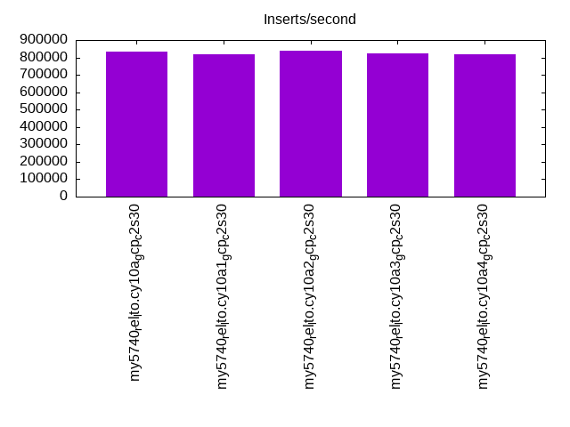
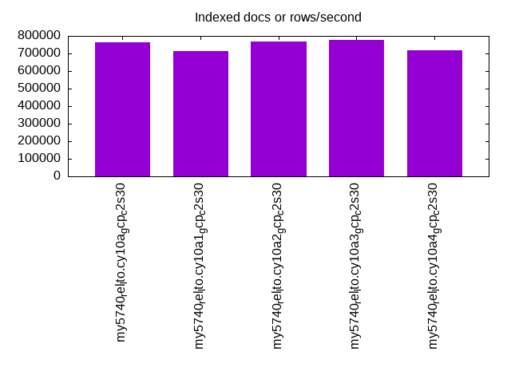
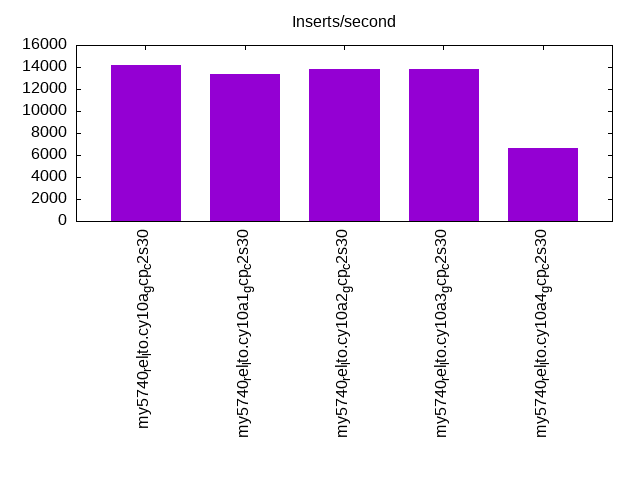
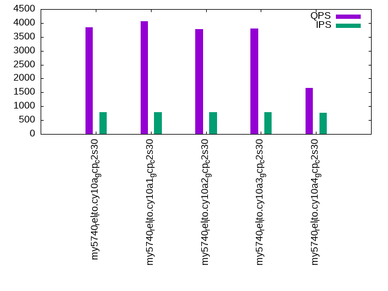
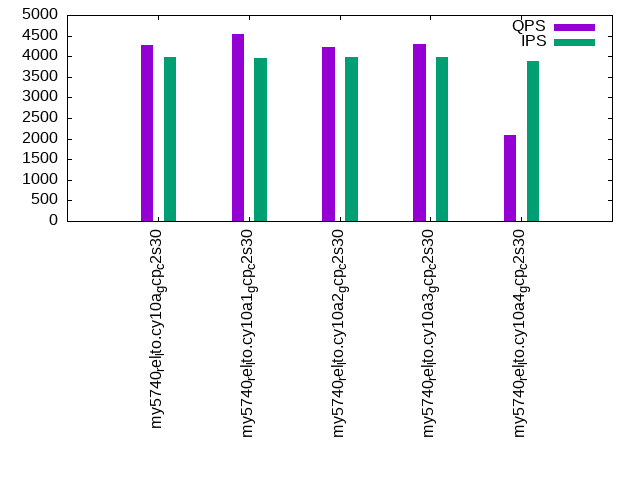
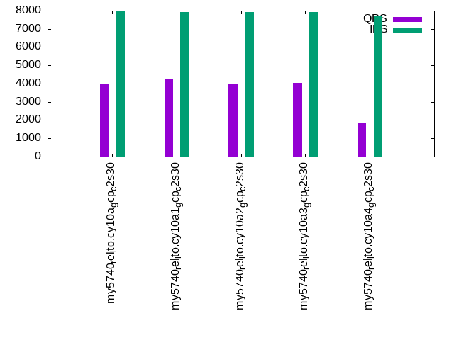

This is a report for the insert benchmark with 4000M docs and 8 client(s). It is generated by scripts (bash, awk, sed) and Tufte might not be impressed. An overview of the insert benchmark is here and a short update is here. Below, by DBMS, I mean DBMS+version.config. An example is my8020.c10b40 where my means MySQL, 8020 is version 8.0.20 and c10b40 is the name for the configuration file.
The test server is a c2-standard-30 from GCP with 15 cores, hyperthreads disabled, 120G RAM, XFS + SW RAID 0 on 4 NVMe devices (1.5TB). The benchmark was run with 8 client and there were 1 or 3 connections per client (1 for queries or inserts without rate limits, 1+1 for rate limited inserts+deletes). There are 8 tables, client per table. It loads 4000M rows without secondary indexes, creates secondary indexes, then inserts 80M rows with a delete per insert to avoid growing the table. It then does 3 read+write tests for 1800s each that do queries as fast as possible with 100, 500 and then 1000 inserts/second/client concurrent with the queries and 1000 deletes/second to avoid growing the table. The database is larger than memory.
The tested DBMS are:
The numbers are inserts/s for l.i0 and l.i1, indexed docs (or rows) /s for l.x and queries/s for q*.2. The values are the average rate over the entire test for inserts (IPS) and queries (QPS). The range of values for IPS and QPS is split into 3 parts: bottom 25%, middle 50%, top 25%. Values in the bottom 25% have a red background, values in the top 25% have a green background and values in the middle have no color. A gray background is used for values that can be ignored because the DBMS did not sustain the target insert rate. Red backgrounds are not used when the minimum value is within 80% of the max value.
| dbms | l.i0 | l.x | l.i1 | q100.1 | q500.1 | q1000.1 |
|---|---|---|---|---|---|---|
| my5740_rel_lto.cy10a_gcp_c2s30 | 833854 | 764253 | 14167 | 3835 | 4268 | 4019 |
| my5740_rel_lto.cy10a1_gcp_c2s30 | 820681 | 713284 | 13364 | 4074 | 4544 | 4228 |
| my5740_rel_lto.cy10a2_gcp_c2s30 | 839454 | 769398 | 13798 | 3787 | 4216 | 4006 |
| my5740_rel_lto.cy10a3_gcp_c2s30 | 822199 | 776417 | 13836 | 3811 | 4294 | 4035 |
| my5740_rel_lto.cy10a4_gcp_c2s30 | 816326 | 719701 | 6612 | 1663 | 2097 | 1834 |
This table has relative throughput, throughput for the DBMS relative to the DBMS in the first line, using the absolute throughput from the previous table. Values less than 0.95 have a yellow background. Values greater than 1.05 have a blue background.
| dbms | l.i0 | l.x | l.i1 | q100.1 | q500.1 | q1000.1 |
|---|---|---|---|---|---|---|
| my5740_rel_lto.cy10a_gcp_c2s30 | 1.00 | 1.00 | 1.00 | 1.00 | 1.00 | 1.00 |
| my5740_rel_lto.cy10a1_gcp_c2s30 | 0.98 | 0.93 | 0.94 | 1.06 | 1.06 | 1.05 |
| my5740_rel_lto.cy10a2_gcp_c2s30 | 1.01 | 1.01 | 0.97 | 0.99 | 0.99 | 1.00 |
| my5740_rel_lto.cy10a3_gcp_c2s30 | 0.99 | 1.02 | 0.98 | 0.99 | 1.01 | 1.00 |
| my5740_rel_lto.cy10a4_gcp_c2s30 | 0.98 | 0.94 | 0.47 | 0.43 | 0.49 | 0.46 |
This lists the average rate of inserts/s for the tests that do inserts concurrent with queries. For such tests the query rate is listed in the table above. The read+write tests are setup so that the insert rate should match the target rate every second. Cells that are not at least 95% of the target have a red background to indicate a failure to satisfy the target.
| dbms | q100.1 | q500.1 | q1000.1 |
|---|---|---|---|
| my5740_rel_lto.cy10a_gcp_c2s30 | 789 | 3969 | 7943 |
| my5740_rel_lto.cy10a1_gcp_c2s30 | 789 | 3956 | 7916 |
| my5740_rel_lto.cy10a2_gcp_c2s30 | 789 | 3969 | 7938 |
| my5740_rel_lto.cy10a3_gcp_c2s30 | 789 | 3969 | 7938 |
| my5740_rel_lto.cy10a4_gcp_c2s30 | 754 | 3875 | 7705 |
| target | 800 | 4000 | 8000 |
l.i0: load without secondary indexes. Graphs for performance per 1-second interval are here.
Average throughput:
Insert response time histogram: each cell has the percentage of responses that take <= the time in the header and max is the max response time in seconds. For the max column values in the top 25% of the range have a red background and in the bottom 25% of the range have a green background. The red background is not used when the min value is within 80% of the max value.
| dbms | 256us | 1ms | 4ms | 16ms | 64ms | 256ms | 1s | 4s | 16s | gt | max |
|---|---|---|---|---|---|---|---|---|---|---|---|
| my5740_rel_lto.cy10a_gcp_c2s30 | 94.985 | 4.937 | 0.046 | 0.016 | 0.015 | 0.001 | nonzero | 1.626 | |||
| my5740_rel_lto.cy10a1_gcp_c2s30 | 92.352 | 7.573 | 0.044 | 0.015 | 0.015 | nonzero | 0.662 | ||||
| my5740_rel_lto.cy10a2_gcp_c2s30 | 95.581 | 4.337 | 0.048 | 0.018 | 0.015 | 0.001 | nonzero | 2.727 | |||
| my5740_rel_lto.cy10a3_gcp_c2s30 | 94.771 | 5.148 | 0.048 | 0.017 | 0.015 | 0.001 | nonzero | 3.529 | |||
| my5740_rel_lto.cy10a4_gcp_c2s30 | 93.548 | 6.186 | 0.229 | 0.022 | 0.015 | nonzero | nonzero | nonzero | 6.066 |
Performance metrics for the DBMS listed above. Some are normalized by throughput, others are not. Legend for results is here.
ips qps rps rmbps wps wmbps rpq rkbpq wpi wkbpi csps cpups cspq cpupq dbgb1 dbgb2 rss maxop p50 p99 tag 833854 0 0 0.0 4013.5 233.9 0.000 0.000 0.005 0.287 85613 73.2 0.103 13 263.1 391.6 86.8 1.626 107384 82111 4000m.my5740_rel_lto.cy10a_gcp_c2s30 820681 0 0 0.0 3945.2 230.3 0.000 0.000 0.005 0.287 86745 73.4 0.106 13 263.1 391.6 86.8 0.662 105087 81538 4000m.my5740_rel_lto.cy10a1_gcp_c2s30 839454 0 0 0.0 4091.3 236.8 0.000 0.000 0.005 0.289 86787 73.4 0.103 13 263.1 391.6 86.8 2.727 107819 81239 4000m.my5740_rel_lto.cy10a2_gcp_c2s30 822199 0 0 0.0 4016.7 232.3 0.000 0.000 0.005 0.289 84250 72.4 0.102 13 263.1 391.6 86.8 3.529 107020 77041 4000m.my5740_rel_lto.cy10a3_gcp_c2s30 816326 0 0 0.0 953.5 211.6 0.000 0.000 0.001 0.265 86374 72.4 0.106 13 263.1 391.6 86.7 6.066 104786 80014 4000m.my5740_rel_lto.cy10a4_gcp_c2s30
l.x: create secondary indexes.
Average throughput:
Performance metrics for the DBMS listed above. Some are normalized by throughput, others are not. Legend for results is here.
ips qps rps rmbps wps wmbps rpq rkbpq wpi wkbpi csps cpups cspq cpupq dbgb1 dbgb2 rss maxop p50 p99 tag 764253 0 4027 672.1 7717.6 864.1 0.005 0.900 0.010 1.158 27488 29.5 0.036 6 588.3 716.8 87.3 0.033 NA NA 4000m.my5740_rel_lto.cy10a_gcp_c2s30 713284 0 3759 625.9 7143.7 808.4 0.005 0.899 0.010 1.161 38006 26.8 0.053 6 588.3 716.8 87.3 0.030 NA NA 4000m.my5740_rel_lto.cy10a1_gcp_c2s30 769398 0 4055 675.6 7625.8 863.0 0.005 0.899 0.010 1.149 27015 29.4 0.035 6 588.3 716.8 87.3 0.033 NA NA 4000m.my5740_rel_lto.cy10a2_gcp_c2s30 776417 0 4096 678.0 7550.8 862.6 0.005 0.894 0.010 1.138 25588 29.9 0.033 6 588.3 716.8 87.3 0.030 NA NA 4000m.my5740_rel_lto.cy10a3_gcp_c2s30 719701 0 1435 621.4 3172.4 762.8 0.002 0.884 0.004 1.085 27352 28.0 0.038 6 588.3 716.8 87.3 0.037 NA NA 4000m.my5740_rel_lto.cy10a4_gcp_c2s30
l.i1: continue load after secondary indexes created. Graphs for performance per 1-second interval are here.
Average throughput:
Insert response time histogram: each cell has the percentage of responses that take <= the time in the header and max is the max response time in seconds. For the max column values in the top 25% of the range have a red background and in the bottom 25% of the range have a green background. The red background is not used when the min value is within 80% of the max value.
| dbms | 256us | 1ms | 4ms | 16ms | 64ms | 256ms | 1s | 4s | 16s | gt | max |
|---|---|---|---|---|---|---|---|---|---|---|---|
| my5740_rel_lto.cy10a_gcp_c2s30 | 2.418 | 58.267 | 27.289 | 11.991 | 0.035 | 0.337 | |||||
| my5740_rel_lto.cy10a1_gcp_c2s30 | 3.781 | 56.438 | 26.243 | 13.527 | 0.011 | 0.348 | |||||
| my5740_rel_lto.cy10a2_gcp_c2s30 | 3.059 | 55.789 | 28.719 | 12.376 | 0.057 | 0.377 | |||||
| my5740_rel_lto.cy10a3_gcp_c2s30 | 3.149 | 56.149 | 28.426 | 12.188 | 0.088 | nonzero | 1.079 | ||||
| my5740_rel_lto.cy10a4_gcp_c2s30 | 5.024 | 43.110 | 28.054 | 16.929 | 6.883 | 0.690 |
Delete response time histogram: each cell has the percentage of responses that take <= the time in the header and max is the max response time in seconds. For the max column values in the top 25% of the range have a red background and in the bottom 25% of the range have a green background. The red background is not used when the min value is within 80% of the max value.
| dbms | 256us | 1ms | 4ms | 16ms | 64ms | 256ms | 1s | 4s | 16s | gt | max |
|---|---|---|---|---|---|---|---|---|---|---|---|
| my5740_rel_lto.cy10a_gcp_c2s30 | 29.605 | 66.350 | 3.903 | 0.143 | 0.179 | ||||||
| my5740_rel_lto.cy10a1_gcp_c2s30 | 32.018 | 63.981 | 3.743 | 0.253 | 0.006 | 0.347 | |||||
| my5740_rel_lto.cy10a2_gcp_c2s30 | 32.691 | 61.753 | 5.410 | 0.146 | 0.168 | ||||||
| my5740_rel_lto.cy10a3_gcp_c2s30 | 31.883 | 62.794 | 5.179 | 0.144 | 0.152 | ||||||
| my5740_rel_lto.cy10a4_gcp_c2s30 | 35.036 | 53.312 | 11.314 | 0.337 | 0.245 |
Performance metrics for the DBMS listed above. Some are normalized by throughput, others are not. Legend for results is here.
ips qps rps rmbps wps wmbps rpq rkbpq wpi wkbpi csps cpups cspq cpupq dbgb1 dbgb2 rss maxop p50 p99 tag 14167 0 15840 247.5 31321.4 730.8 1.118 17.889 2.211 52.821 129654 28.2 9.152 299 812.3 979.0 87.1 0.337 749 250 4000m.my5740_rel_lto.cy10a_gcp_c2s30 13364 0 14480 226.3 27699.1 675.9 1.083 17.336 2.073 51.789 137549 28.2 10.292 317 812.5 979.3 86.9 0.348 749 250 4000m.my5740_rel_lto.cy10a1_gcp_c2s30 13798 0 15584 243.5 32364.9 741.1 1.129 18.071 2.346 55.000 130393 26.0 9.450 283 812.4 978.5 87.0 0.377 749 250 4000m.my5740_rel_lto.cy10a2_gcp_c2s30 13836 0 15626 244.2 32442.1 747.6 1.129 18.070 2.345 55.331 129137 26.5 9.333 287 812.5 978.2 86.9 1.079 749 250 4000m.my5740_rel_lto.cy10a3_gcp_c2s30 6612 0 7391 197.0 12241.5 335.6 1.118 30.513 1.852 51.983 110293 15.7 16.682 356 812.4 980.2 87.0 0.690 250 100 4000m.my5740_rel_lto.cy10a4_gcp_c2s30
q100.1: range queries with 100 insert/s per client. Graphs for performance per 1-second interval are here.
Average throughput:
Query response time histogram: each cell has the percentage of responses that take <= the time in the header and max is the max response time in seconds. For max values in the top 25% of the range have a red background and in the bottom 25% of the range have a green background. The red background is not used when the min value is within 80% of the max value.
| dbms | 256us | 1ms | 4ms | 16ms | 64ms | 256ms | 1s | 4s | 16s | gt | max |
|---|---|---|---|---|---|---|---|---|---|---|---|
| my5740_rel_lto.cy10a_gcp_c2s30 | 38.995 | 2.272 | 46.436 | 12.267 | 0.030 | nonzero | 0.074 | ||||
| my5740_rel_lto.cy10a1_gcp_c2s30 | 39.151 | 2.519 | 49.484 | 8.754 | 0.082 | 0.012 | nonzero | 0.792 | |||
| my5740_rel_lto.cy10a2_gcp_c2s30 | 39.026 | 2.255 | 45.718 | 12.964 | 0.037 | nonzero | 0.105 | ||||
| my5740_rel_lto.cy10a3_gcp_c2s30 | 38.806 | 2.367 | 46.078 | 12.718 | 0.032 | nonzero | 0.147 | ||||
| my5740_rel_lto.cy10a4_gcp_c2s30 | 39.822 | 2.290 | 25.736 | 24.844 | 7.282 | 0.026 | 0.184 |
Insert response time histogram: each cell has the percentage of responses that take <= the time in the header and max is the max response time in seconds. For max values in the top 25% of the range have a red background and in the bottom 25% of the range have a green background. The red background is not used when the min value is within 80% of the max value.
| dbms | 256us | 1ms | 4ms | 16ms | 64ms | 256ms | 1s | 4s | 16s | gt | max |
|---|---|---|---|---|---|---|---|---|---|---|---|
| my5740_rel_lto.cy10a_gcp_c2s30 | 27.243 | 71.983 | 0.771 | 0.003 | 0.072 | ||||||
| my5740_rel_lto.cy10a1_gcp_c2s30 | 26.882 | 70.333 | 2.323 | 0.458 | 0.003 | 0.371 | |||||
| my5740_rel_lto.cy10a2_gcp_c2s30 | 39.497 | 59.670 | 0.833 | 0.061 | |||||||
| my5740_rel_lto.cy10a3_gcp_c2s30 | 34.938 | 64.094 | 0.951 | 0.017 | 0.209 | ||||||
| my5740_rel_lto.cy10a4_gcp_c2s30 | 19.375 | 58.278 | 22.198 | 0.149 | 0.170 |
Delete response time histogram: each cell has the percentage of responses that take <= the time in the header and max is the max response time in seconds. For max values in the top 25% of the range have a red background and in the bottom 25% of the range have a green background. The red background is not used when the min value is within 80% of the max value.
| dbms | 256us | 1ms | 4ms | 16ms | 64ms | 256ms | 1s | 4s | 16s | gt | max |
|---|---|---|---|---|---|---|---|---|---|---|---|
| my5740_rel_lto.cy10a_gcp_c2s30 | 37.878 | 61.493 | 0.625 | 0.003 | 0.072 | ||||||
| my5740_rel_lto.cy10a1_gcp_c2s30 | 34.389 | 63.167 | 2.021 | 0.420 | 0.003 | 0.371 | |||||
| my5740_rel_lto.cy10a2_gcp_c2s30 | 48.253 | 51.045 | 0.701 | 0.063 | |||||||
| my5740_rel_lto.cy10a3_gcp_c2s30 | 43.691 | 55.479 | 0.812 | 0.017 | 0.209 | ||||||
| my5740_rel_lto.cy10a4_gcp_c2s30 | 23.965 | 57.111 | 18.774 | 0.149 | 0.174 |
Performance metrics for the DBMS listed above. Some are normalized by throughput, others are not. Legend for results is here.
ips qps rps rmbps wps wmbps rpq rkbpq wpi wkbpi csps cpups cspq cpupq dbgb1 dbgb2 rss maxop p50 p99 tag 789 3835 30976 484.0 22554.2 551.0 8.076 129.221 28.571 714.715 130370 20.0 33.991 782 812.3 979.0 87.0 0.074 511 224 4000m.my5740_rel_lto.cy10a_gcp_c2s30 789 4074 30670 479.2 19959.5 512.3 7.529 120.467 25.297 664.911 143279 21.3 35.173 784 812.5 979.3 86.9 0.792 543 240 4000m.my5740_rel_lto.cy10a1_gcp_c2s30 789 3787 31185 487.3 23495.2 564.5 8.235 131.767 29.778 732.672 131820 19.5 34.811 772 812.4 978.5 86.9 0.105 496 208 4000m.my5740_rel_lto.cy10a2_gcp_c2s30 789 3811 31487 492.0 23033.5 567.9 8.261 132.178 29.179 736.685 130264 19.9 34.177 783 812.5 978.2 86.9 0.147 511 224 4000m.my5740_rel_lto.cy10a3_gcp_c2s30 754 1663 11902 926.5 10084.8 252.7 7.157 570.432 13.384 343.424 101731 15.2 61.169 1371 812.4 980.2 86.9 0.184 224 112 4000m.my5740_rel_lto.cy10a4_gcp_c2s30
q500.1: range queries with 500 insert/s per client. Graphs for performance per 1-second interval are here.
Average throughput:
Query response time histogram: each cell has the percentage of responses that take <= the time in the header and max is the max response time in seconds. For max values in the top 25% of the range have a red background and in the bottom 25% of the range have a green background. The red background is not used when the min value is within 80% of the max value.
| dbms | 256us | 1ms | 4ms | 16ms | 64ms | 256ms | 1s | 4s | 16s | gt | max |
|---|---|---|---|---|---|---|---|---|---|---|---|
| my5740_rel_lto.cy10a_gcp_c2s30 | 39.177 | 2.650 | 50.461 | 7.704 | 0.007 | nonzero | 0.066 | ||||
| my5740_rel_lto.cy10a1_gcp_c2s30 | 39.309 | 2.959 | 53.221 | 4.464 | 0.047 | 0.058 | |||||
| my5740_rel_lto.cy10a2_gcp_c2s30 | 39.309 | 2.666 | 49.666 | 8.320 | 0.040 | nonzero | 0.114 | ||||
| my5740_rel_lto.cy10a3_gcp_c2s30 | 39.053 | 2.807 | 50.658 | 7.475 | 0.006 | 0.064 | |||||
| my5740_rel_lto.cy10a4_gcp_c2s30 | 41.148 | 2.617 | 29.418 | 21.867 | 4.942 | 0.008 | 0.177 |
Insert response time histogram: each cell has the percentage of responses that take <= the time in the header and max is the max response time in seconds. For max values in the top 25% of the range have a red background and in the bottom 25% of the range have a green background. The red background is not used when the min value is within 80% of the max value.
| dbms | 256us | 1ms | 4ms | 16ms | 64ms | 256ms | 1s | 4s | 16s | gt | max |
|---|---|---|---|---|---|---|---|---|---|---|---|
| my5740_rel_lto.cy10a_gcp_c2s30 | 47.357 | 52.433 | 0.210 | 0.033 | |||||||
| my5740_rel_lto.cy10a1_gcp_c2s30 | 54.142 | 45.091 | 0.763 | 0.004 | 0.103 | ||||||
| my5740_rel_lto.cy10a2_gcp_c2s30 | 58.983 | 40.669 | 0.345 | 0.002 | 0.079 | ||||||
| my5740_rel_lto.cy10a3_gcp_c2s30 | 58.064 | 41.742 | 0.194 | 0.001 | 0.065 | ||||||
| my5740_rel_lto.cy10a4_gcp_c2s30 | 39.865 | 49.001 | 11.065 | 0.069 | 0.176 |
Delete response time histogram: each cell has the percentage of responses that take <= the time in the header and max is the max response time in seconds. For max values in the top 25% of the range have a red background and in the bottom 25% of the range have a green background. The red background is not used when the min value is within 80% of the max value.
| dbms | 256us | 1ms | 4ms | 16ms | 64ms | 256ms | 1s | 4s | 16s | gt | max |
|---|---|---|---|---|---|---|---|---|---|---|---|
| my5740_rel_lto.cy10a_gcp_c2s30 | 70.837 | 29.073 | 0.090 | 0.034 | |||||||
| my5740_rel_lto.cy10a1_gcp_c2s30 | 70.781 | 28.670 | 0.545 | 0.004 | 0.098 | ||||||
| my5740_rel_lto.cy10a2_gcp_c2s30 | 76.481 | 23.326 | 0.193 | 0.051 | |||||||
| my5740_rel_lto.cy10a3_gcp_c2s30 | 76.020 | 23.860 | 0.120 | 0.057 | |||||||
| my5740_rel_lto.cy10a4_gcp_c2s30 | 48.778 | 43.094 | 8.048 | 0.079 | 0.177 |
Performance metrics for the DBMS listed above. Some are normalized by throughput, others are not. Legend for results is here.
ips qps rps rmbps wps wmbps rpq rkbpq wpi wkbpi csps cpups cspq cpupq dbgb1 dbgb2 rss maxop p50 p99 tag 3969 4268 33534 524.0 20684.4 528.4 7.857 125.716 5.211 136.322 136167 21.9 31.905 770 812.3 979.0 86.9 0.066 543 479 4000m.my5740_rel_lto.cy10a_gcp_c2s30 3956 4544 32965 515.1 17503.8 477.2 7.254 116.062 4.425 123.524 147255 23.1 32.403 762 812.5 979.3 86.9 0.058 575 511 4000m.my5740_rel_lto.cy10a1_gcp_c2s30 3969 4216 33436 522.4 21421.9 535.1 7.931 126.893 5.397 138.042 137737 20.9 32.670 744 812.4 978.5 86.9 0.114 528 304 4000m.my5740_rel_lto.cy10a2_gcp_c2s30 3969 4294 34232 534.9 21381.2 548.5 7.973 127.564 5.387 141.501 138705 21.7 32.305 758 812.5 978.2 86.9 0.064 543 479 4000m.my5740_rel_lto.cy10a3_gcp_c2s30 3875 2097 13994 1058.9 9871.3 237.2 6.674 517.111 2.547 62.686 107109 17.8 51.080 1273 812.4 980.4 86.9 0.177 272 208 4000m.my5740_rel_lto.cy10a4_gcp_c2s30
q1000.1: range queries with 1000 insert/s per client. Graphs for performance per 1-second interval are here.
Average throughput:
Query response time histogram: each cell has the percentage of responses that take <= the time in the header and max is the max response time in seconds. For max values in the top 25% of the range have a red background and in the bottom 25% of the range have a green background. The red background is not used when the min value is within 80% of the max value.
| dbms | 256us | 1ms | 4ms | 16ms | 64ms | 256ms | 1s | 4s | 16s | gt | max |
|---|---|---|---|---|---|---|---|---|---|---|---|
| my5740_rel_lto.cy10a_gcp_c2s30 | 38.713 | 2.527 | 48.355 | 10.389 | 0.016 | 0.063 | |||||
| my5740_rel_lto.cy10a1_gcp_c2s30 | 38.715 | 2.840 | 50.794 | 7.593 | 0.058 | nonzero | nonzero | 1.018 | |||
| my5740_rel_lto.cy10a2_gcp_c2s30 | 38.922 | 2.508 | 47.814 | 10.737 | 0.019 | nonzero | 0.064 | ||||
| my5740_rel_lto.cy10a3_gcp_c2s30 | 38.676 | 2.648 | 48.303 | 10.358 | 0.014 | nonzero | 0.081 | ||||
| my5740_rel_lto.cy10a4_gcp_c2s30 | 39.697 | 2.892 | 27.735 | 23.184 | 6.478 | 0.015 | 0.234 |
Insert response time histogram: each cell has the percentage of responses that take <= the time in the header and max is the max response time in seconds. For max values in the top 25% of the range have a red background and in the bottom 25% of the range have a green background. The red background is not used when the min value is within 80% of the max value.
| dbms | 256us | 1ms | 4ms | 16ms | 64ms | 256ms | 1s | 4s | 16s | gt | max |
|---|---|---|---|---|---|---|---|---|---|---|---|
| my5740_rel_lto.cy10a_gcp_c2s30 | 46.219 | 53.477 | 0.304 | 0.049 | |||||||
| my5740_rel_lto.cy10a1_gcp_c2s30 | 47.677 | 51.190 | 1.127 | 0.005 | nonzero | 1.217 | |||||
| my5740_rel_lto.cy10a2_gcp_c2s30 | 61.751 | 38.069 | 0.180 | 0.060 | |||||||
| my5740_rel_lto.cy10a3_gcp_c2s30 | 59.437 | 40.396 | 0.167 | 0.032 | |||||||
| my5740_rel_lto.cy10a4_gcp_c2s30 | 34.818 | 52.439 | 12.664 | 0.079 | 0.170 |
Delete response time histogram: each cell has the percentage of responses that take <= the time in the header and max is the max response time in seconds. For max values in the top 25% of the range have a red background and in the bottom 25% of the range have a green background. The red background is not used when the min value is within 80% of the max value.
| dbms | 256us | 1ms | 4ms | 16ms | 64ms | 256ms | 1s | 4s | 16s | gt | max |
|---|---|---|---|---|---|---|---|---|---|---|---|
| my5740_rel_lto.cy10a_gcp_c2s30 | 67.314 | 32.538 | 0.148 | nonzero | 0.073 | ||||||
| my5740_rel_lto.cy10a1_gcp_c2s30 | 62.325 | 36.897 | 0.772 | 0.006 | nonzero | 1.216 | |||||
| my5740_rel_lto.cy10a2_gcp_c2s30 | 77.625 | 22.256 | 0.118 | 0.001 | 0.087 | ||||||
| my5740_rel_lto.cy10a3_gcp_c2s30 | 76.163 | 23.734 | 0.102 | 0.001 | 0.068 | ||||||
| my5740_rel_lto.cy10a4_gcp_c2s30 | 40.269 | 48.979 | 10.655 | 0.097 | 0.187 |
Performance metrics for the DBMS listed above. Some are normalized by throughput, others are not. Legend for results is here.
ips qps rps rmbps wps wmbps rpq rkbpq wpi wkbpi csps cpups cspq cpupq dbgb1 dbgb2 rss maxop p50 p99 tag 7943 4019 31423 491.0 22910.8 558.9 7.818 125.090 2.885 72.054 138359 25.1 34.424 937 812.3 979.1 86.9 0.063 511 448 4000m.my5740_rel_lto.cy10a_gcp_c2s30 7916 4228 30642 478.8 20035.1 513.1 7.248 115.966 2.531 66.370 148099 26.4 35.031 937 812.5 979.6 86.9 1.018 528 479 4000m.my5740_rel_lto.cy10a1_gcp_c2s30 7938 4006 31454 491.5 23866.3 568.7 7.851 125.613 3.007 73.357 139796 23.4 34.893 876 812.4 978.8 86.9 0.064 496 448 4000m.my5740_rel_lto.cy10a2_gcp_c2s30 7938 4035 31874 498.0 23647.5 578.7 7.899 126.383 2.979 74.654 139845 24.2 34.655 900 812.5 978.4 86.9 0.081 511 448 4000m.my5740_rel_lto.cy10a3_gcp_c2s30 7705 1834 12426 961.6 10403.9 252.8 6.774 536.783 1.350 33.599 109259 20.6 59.558 1684 813.4 982.4 86.9 0.234 240 144 4000m.my5740_rel_lto.cy10a4_gcp_c2s30
l.i0: load without secondary indexes
Performance metrics for all DBMS, not just the ones listed above. Some are normalized by throughput, others are not. Legend for results is here.
ips qps rps rmbps wps wmbps rpq rkbpq wpi wkbpi csps cpups cspq cpupq dbgb1 dbgb2 rss maxop p50 p99 tag 833854 0 0 0.0 4013.5 233.9 0.000 0.000 0.005 0.287 85613 73.2 0.103 13 263.1 391.6 86.8 1.626 107384 82111 4000m.my5740_rel_lto.cy10a_gcp_c2s30 820681 0 0 0.0 3945.2 230.3 0.000 0.000 0.005 0.287 86745 73.4 0.106 13 263.1 391.6 86.8 0.662 105087 81538 4000m.my5740_rel_lto.cy10a1_gcp_c2s30 839454 0 0 0.0 4091.3 236.8 0.000 0.000 0.005 0.289 86787 73.4 0.103 13 263.1 391.6 86.8 2.727 107819 81239 4000m.my5740_rel_lto.cy10a2_gcp_c2s30 822199 0 0 0.0 4016.7 232.3 0.000 0.000 0.005 0.289 84250 72.4 0.102 13 263.1 391.6 86.8 3.529 107020 77041 4000m.my5740_rel_lto.cy10a3_gcp_c2s30 816326 0 0 0.0 953.5 211.6 0.000 0.000 0.001 0.265 86374 72.4 0.106 13 263.1 391.6 86.7 6.066 104786 80014 4000m.my5740_rel_lto.cy10a4_gcp_c2s30
l.x: create secondary indexes
Performance metrics for all DBMS, not just the ones listed above. Some are normalized by throughput, others are not. Legend for results is here.
ips qps rps rmbps wps wmbps rpq rkbpq wpi wkbpi csps cpups cspq cpupq dbgb1 dbgb2 rss maxop p50 p99 tag 764253 0 4027 672.1 7717.6 864.1 0.005 0.900 0.010 1.158 27488 29.5 0.036 6 588.3 716.8 87.3 0.033 NA NA 4000m.my5740_rel_lto.cy10a_gcp_c2s30 713284 0 3759 625.9 7143.7 808.4 0.005 0.899 0.010 1.161 38006 26.8 0.053 6 588.3 716.8 87.3 0.030 NA NA 4000m.my5740_rel_lto.cy10a1_gcp_c2s30 769398 0 4055 675.6 7625.8 863.0 0.005 0.899 0.010 1.149 27015 29.4 0.035 6 588.3 716.8 87.3 0.033 NA NA 4000m.my5740_rel_lto.cy10a2_gcp_c2s30 776417 0 4096 678.0 7550.8 862.6 0.005 0.894 0.010 1.138 25588 29.9 0.033 6 588.3 716.8 87.3 0.030 NA NA 4000m.my5740_rel_lto.cy10a3_gcp_c2s30 719701 0 1435 621.4 3172.4 762.8 0.002 0.884 0.004 1.085 27352 28.0 0.038 6 588.3 716.8 87.3 0.037 NA NA 4000m.my5740_rel_lto.cy10a4_gcp_c2s30
l.i1: continue load after secondary indexes created
Performance metrics for all DBMS, not just the ones listed above. Some are normalized by throughput, others are not. Legend for results is here.
ips qps rps rmbps wps wmbps rpq rkbpq wpi wkbpi csps cpups cspq cpupq dbgb1 dbgb2 rss maxop p50 p99 tag 14167 0 15840 247.5 31321.4 730.8 1.118 17.889 2.211 52.821 129654 28.2 9.152 299 812.3 979.0 87.1 0.337 749 250 4000m.my5740_rel_lto.cy10a_gcp_c2s30 13364 0 14480 226.3 27699.1 675.9 1.083 17.336 2.073 51.789 137549 28.2 10.292 317 812.5 979.3 86.9 0.348 749 250 4000m.my5740_rel_lto.cy10a1_gcp_c2s30 13798 0 15584 243.5 32364.9 741.1 1.129 18.071 2.346 55.000 130393 26.0 9.450 283 812.4 978.5 87.0 0.377 749 250 4000m.my5740_rel_lto.cy10a2_gcp_c2s30 13836 0 15626 244.2 32442.1 747.6 1.129 18.070 2.345 55.331 129137 26.5 9.333 287 812.5 978.2 86.9 1.079 749 250 4000m.my5740_rel_lto.cy10a3_gcp_c2s30 6612 0 7391 197.0 12241.5 335.6 1.118 30.513 1.852 51.983 110293 15.7 16.682 356 812.4 980.2 87.0 0.690 250 100 4000m.my5740_rel_lto.cy10a4_gcp_c2s30
q100.1: range queries with 100 insert/s per client
Performance metrics for all DBMS, not just the ones listed above. Some are normalized by throughput, others are not. Legend for results is here.
ips qps rps rmbps wps wmbps rpq rkbpq wpi wkbpi csps cpups cspq cpupq dbgb1 dbgb2 rss maxop p50 p99 tag 789 3835 30976 484.0 22554.2 551.0 8.076 129.221 28.571 714.715 130370 20.0 33.991 782 812.3 979.0 87.0 0.074 511 224 4000m.my5740_rel_lto.cy10a_gcp_c2s30 789 4074 30670 479.2 19959.5 512.3 7.529 120.467 25.297 664.911 143279 21.3 35.173 784 812.5 979.3 86.9 0.792 543 240 4000m.my5740_rel_lto.cy10a1_gcp_c2s30 789 3787 31185 487.3 23495.2 564.5 8.235 131.767 29.778 732.672 131820 19.5 34.811 772 812.4 978.5 86.9 0.105 496 208 4000m.my5740_rel_lto.cy10a2_gcp_c2s30 789 3811 31487 492.0 23033.5 567.9 8.261 132.178 29.179 736.685 130264 19.9 34.177 783 812.5 978.2 86.9 0.147 511 224 4000m.my5740_rel_lto.cy10a3_gcp_c2s30 754 1663 11902 926.5 10084.8 252.7 7.157 570.432 13.384 343.424 101731 15.2 61.169 1371 812.4 980.2 86.9 0.184 224 112 4000m.my5740_rel_lto.cy10a4_gcp_c2s30
q500.1: range queries with 500 insert/s per client
Performance metrics for all DBMS, not just the ones listed above. Some are normalized by throughput, others are not. Legend for results is here.
ips qps rps rmbps wps wmbps rpq rkbpq wpi wkbpi csps cpups cspq cpupq dbgb1 dbgb2 rss maxop p50 p99 tag 3969 4268 33534 524.0 20684.4 528.4 7.857 125.716 5.211 136.322 136167 21.9 31.905 770 812.3 979.0 86.9 0.066 543 479 4000m.my5740_rel_lto.cy10a_gcp_c2s30 3956 4544 32965 515.1 17503.8 477.2 7.254 116.062 4.425 123.524 147255 23.1 32.403 762 812.5 979.3 86.9 0.058 575 511 4000m.my5740_rel_lto.cy10a1_gcp_c2s30 3969 4216 33436 522.4 21421.9 535.1 7.931 126.893 5.397 138.042 137737 20.9 32.670 744 812.4 978.5 86.9 0.114 528 304 4000m.my5740_rel_lto.cy10a2_gcp_c2s30 3969 4294 34232 534.9 21381.2 548.5 7.973 127.564 5.387 141.501 138705 21.7 32.305 758 812.5 978.2 86.9 0.064 543 479 4000m.my5740_rel_lto.cy10a3_gcp_c2s30 3875 2097 13994 1058.9 9871.3 237.2 6.674 517.111 2.547 62.686 107109 17.8 51.080 1273 812.4 980.4 86.9 0.177 272 208 4000m.my5740_rel_lto.cy10a4_gcp_c2s30
q1000.1: range queries with 1000 insert/s per client
Performance metrics for all DBMS, not just the ones listed above. Some are normalized by throughput, others are not. Legend for results is here.
ips qps rps rmbps wps wmbps rpq rkbpq wpi wkbpi csps cpups cspq cpupq dbgb1 dbgb2 rss maxop p50 p99 tag 7943 4019 31423 491.0 22910.8 558.9 7.818 125.090 2.885 72.054 138359 25.1 34.424 937 812.3 979.1 86.9 0.063 511 448 4000m.my5740_rel_lto.cy10a_gcp_c2s30 7916 4228 30642 478.8 20035.1 513.1 7.248 115.966 2.531 66.370 148099 26.4 35.031 937 812.5 979.6 86.9 1.018 528 479 4000m.my5740_rel_lto.cy10a1_gcp_c2s30 7938 4006 31454 491.5 23866.3 568.7 7.851 125.613 3.007 73.357 139796 23.4 34.893 876 812.4 978.8 86.9 0.064 496 448 4000m.my5740_rel_lto.cy10a2_gcp_c2s30 7938 4035 31874 498.0 23647.5 578.7 7.899 126.383 2.979 74.654 139845 24.2 34.655 900 812.5 978.4 86.9 0.081 511 448 4000m.my5740_rel_lto.cy10a3_gcp_c2s30 7705 1834 12426 961.6 10403.9 252.8 6.774 536.783 1.350 33.599 109259 20.6 59.558 1684 813.4 982.4 86.9 0.234 240 144 4000m.my5740_rel_lto.cy10a4_gcp_c2s30
Insert response time histogram
256us 1ms 4ms 16ms 64ms 256ms 1s 4s 16s gt max tag 0.000 94.985 4.937 0.046 0.016 0.015 0.001 nonzero 0.000 0.000 1.626 my5740_rel_lto.cy10a_gcp_c2s30 0.000 92.352 7.573 0.044 0.015 0.015 nonzero 0.000 0.000 0.000 0.662 my5740_rel_lto.cy10a1_gcp_c2s30 0.000 95.581 4.337 0.048 0.018 0.015 0.001 nonzero 0.000 0.000 2.727 my5740_rel_lto.cy10a2_gcp_c2s30 0.000 94.771 5.148 0.048 0.017 0.015 0.001 nonzero 0.000 0.000 3.529 my5740_rel_lto.cy10a3_gcp_c2s30 0.000 93.548 6.186 0.229 0.022 0.015 nonzero nonzero nonzero 0.000 6.066 my5740_rel_lto.cy10a4_gcp_c2s30
TODO - determine whether there is data for create index response time
Insert response time histogram
256us 1ms 4ms 16ms 64ms 256ms 1s 4s 16s gt max tag 0.000 0.000 2.418 58.267 27.289 11.991 0.035 0.000 0.000 0.000 0.337 my5740_rel_lto.cy10a_gcp_c2s30 0.000 0.000 3.781 56.438 26.243 13.527 0.011 0.000 0.000 0.000 0.348 my5740_rel_lto.cy10a1_gcp_c2s30 0.000 0.000 3.059 55.789 28.719 12.376 0.057 0.000 0.000 0.000 0.377 my5740_rel_lto.cy10a2_gcp_c2s30 0.000 0.000 3.149 56.149 28.426 12.188 0.088 nonzero 0.000 0.000 1.079 my5740_rel_lto.cy10a3_gcp_c2s30 0.000 0.000 5.024 43.110 28.054 16.929 6.883 0.000 0.000 0.000 0.690 my5740_rel_lto.cy10a4_gcp_c2s30
Delete response time histogram
256us 1ms 4ms 16ms 64ms 256ms 1s 4s 16s gt max tag 0.000 0.000 29.605 66.350 3.903 0.143 0.000 0.000 0.000 0.000 0.179 my5740_rel_lto.cy10a_gcp_c2s30 0.000 0.000 32.018 63.981 3.743 0.253 0.006 0.000 0.000 0.000 0.347 my5740_rel_lto.cy10a1_gcp_c2s30 0.000 0.000 32.691 61.753 5.410 0.146 0.000 0.000 0.000 0.000 0.168 my5740_rel_lto.cy10a2_gcp_c2s30 0.000 0.000 31.883 62.794 5.179 0.144 0.000 0.000 0.000 0.000 0.152 my5740_rel_lto.cy10a3_gcp_c2s30 0.000 0.000 35.036 53.312 11.314 0.337 0.000 0.000 0.000 0.000 0.245 my5740_rel_lto.cy10a4_gcp_c2s30
Query response time histogram
256us 1ms 4ms 16ms 64ms 256ms 1s 4s 16s gt max tag 38.995 2.272 46.436 12.267 0.030 nonzero 0.000 0.000 0.000 0.000 0.074 my5740_rel_lto.cy10a_gcp_c2s30 39.151 2.519 49.484 8.754 0.082 0.012 nonzero 0.000 0.000 0.000 0.792 my5740_rel_lto.cy10a1_gcp_c2s30 39.026 2.255 45.718 12.964 0.037 nonzero 0.000 0.000 0.000 0.000 0.105 my5740_rel_lto.cy10a2_gcp_c2s30 38.806 2.367 46.078 12.718 0.032 nonzero 0.000 0.000 0.000 0.000 0.147 my5740_rel_lto.cy10a3_gcp_c2s30 39.822 2.290 25.736 24.844 7.282 0.026 0.000 0.000 0.000 0.000 0.184 my5740_rel_lto.cy10a4_gcp_c2s30
Insert response time histogram
256us 1ms 4ms 16ms 64ms 256ms 1s 4s 16s gt max tag 0.000 0.000 27.243 71.983 0.771 0.003 0.000 0.000 0.000 0.000 0.072 my5740_rel_lto.cy10a_gcp_c2s30 0.000 0.000 26.882 70.333 2.323 0.458 0.003 0.000 0.000 0.000 0.371 my5740_rel_lto.cy10a1_gcp_c2s30 0.000 0.000 39.497 59.670 0.833 0.000 0.000 0.000 0.000 0.000 0.061 my5740_rel_lto.cy10a2_gcp_c2s30 0.000 0.000 34.938 64.094 0.951 0.017 0.000 0.000 0.000 0.000 0.209 my5740_rel_lto.cy10a3_gcp_c2s30 0.000 0.000 19.375 58.278 22.198 0.149 0.000 0.000 0.000 0.000 0.170 my5740_rel_lto.cy10a4_gcp_c2s30
Delete response time histogram
256us 1ms 4ms 16ms 64ms 256ms 1s 4s 16s gt max tag 0.000 0.000 37.878 61.493 0.625 0.003 0.000 0.000 0.000 0.000 0.072 my5740_rel_lto.cy10a_gcp_c2s30 0.000 0.000 34.389 63.167 2.021 0.420 0.003 0.000 0.000 0.000 0.371 my5740_rel_lto.cy10a1_gcp_c2s30 0.000 0.000 48.253 51.045 0.701 0.000 0.000 0.000 0.000 0.000 0.063 my5740_rel_lto.cy10a2_gcp_c2s30 0.000 0.000 43.691 55.479 0.812 0.017 0.000 0.000 0.000 0.000 0.209 my5740_rel_lto.cy10a3_gcp_c2s30 0.000 0.000 23.965 57.111 18.774 0.149 0.000 0.000 0.000 0.000 0.174 my5740_rel_lto.cy10a4_gcp_c2s30
Query response time histogram
256us 1ms 4ms 16ms 64ms 256ms 1s 4s 16s gt max tag 39.177 2.650 50.461 7.704 0.007 nonzero 0.000 0.000 0.000 0.000 0.066 my5740_rel_lto.cy10a_gcp_c2s30 39.309 2.959 53.221 4.464 0.047 0.000 0.000 0.000 0.000 0.000 0.058 my5740_rel_lto.cy10a1_gcp_c2s30 39.309 2.666 49.666 8.320 0.040 nonzero 0.000 0.000 0.000 0.000 0.114 my5740_rel_lto.cy10a2_gcp_c2s30 39.053 2.807 50.658 7.475 0.006 0.000 0.000 0.000 0.000 0.000 0.064 my5740_rel_lto.cy10a3_gcp_c2s30 41.148 2.617 29.418 21.867 4.942 0.008 0.000 0.000 0.000 0.000 0.177 my5740_rel_lto.cy10a4_gcp_c2s30
Insert response time histogram
256us 1ms 4ms 16ms 64ms 256ms 1s 4s 16s gt max tag 0.000 0.000 47.357 52.433 0.210 0.000 0.000 0.000 0.000 0.000 0.033 my5740_rel_lto.cy10a_gcp_c2s30 0.000 0.000 54.142 45.091 0.763 0.004 0.000 0.000 0.000 0.000 0.103 my5740_rel_lto.cy10a1_gcp_c2s30 0.000 0.000 58.983 40.669 0.345 0.002 0.000 0.000 0.000 0.000 0.079 my5740_rel_lto.cy10a2_gcp_c2s30 0.000 0.000 58.064 41.742 0.194 0.001 0.000 0.000 0.000 0.000 0.065 my5740_rel_lto.cy10a3_gcp_c2s30 0.000 0.000 39.865 49.001 11.065 0.069 0.000 0.000 0.000 0.000 0.176 my5740_rel_lto.cy10a4_gcp_c2s30
Delete response time histogram
256us 1ms 4ms 16ms 64ms 256ms 1s 4s 16s gt max tag 0.000 0.000 70.837 29.073 0.090 0.000 0.000 0.000 0.000 0.000 0.034 my5740_rel_lto.cy10a_gcp_c2s30 0.000 0.000 70.781 28.670 0.545 0.004 0.000 0.000 0.000 0.000 0.098 my5740_rel_lto.cy10a1_gcp_c2s30 0.000 0.000 76.481 23.326 0.193 0.000 0.000 0.000 0.000 0.000 0.051 my5740_rel_lto.cy10a2_gcp_c2s30 0.000 0.000 76.020 23.860 0.120 0.000 0.000 0.000 0.000 0.000 0.057 my5740_rel_lto.cy10a3_gcp_c2s30 0.000 0.000 48.778 43.094 8.048 0.079 0.000 0.000 0.000 0.000 0.177 my5740_rel_lto.cy10a4_gcp_c2s30
Query response time histogram
256us 1ms 4ms 16ms 64ms 256ms 1s 4s 16s gt max tag 38.713 2.527 48.355 10.389 0.016 0.000 0.000 0.000 0.000 0.000 0.063 my5740_rel_lto.cy10a_gcp_c2s30 38.715 2.840 50.794 7.593 0.058 nonzero 0.000 nonzero 0.000 0.000 1.018 my5740_rel_lto.cy10a1_gcp_c2s30 38.922 2.508 47.814 10.737 0.019 nonzero 0.000 0.000 0.000 0.000 0.064 my5740_rel_lto.cy10a2_gcp_c2s30 38.676 2.648 48.303 10.358 0.014 nonzero 0.000 0.000 0.000 0.000 0.081 my5740_rel_lto.cy10a3_gcp_c2s30 39.697 2.892 27.735 23.184 6.478 0.015 0.000 0.000 0.000 0.000 0.234 my5740_rel_lto.cy10a4_gcp_c2s30
Insert response time histogram
256us 1ms 4ms 16ms 64ms 256ms 1s 4s 16s gt max tag 0.000 0.000 46.219 53.477 0.304 0.000 0.000 0.000 0.000 0.000 0.049 my5740_rel_lto.cy10a_gcp_c2s30 0.000 0.000 47.677 51.190 1.127 0.005 0.000 nonzero 0.000 0.000 1.217 my5740_rel_lto.cy10a1_gcp_c2s30 0.000 0.000 61.751 38.069 0.180 0.000 0.000 0.000 0.000 0.000 0.060 my5740_rel_lto.cy10a2_gcp_c2s30 0.000 0.000 59.437 40.396 0.167 0.000 0.000 0.000 0.000 0.000 0.032 my5740_rel_lto.cy10a3_gcp_c2s30 0.000 0.000 34.818 52.439 12.664 0.079 0.000 0.000 0.000 0.000 0.170 my5740_rel_lto.cy10a4_gcp_c2s30
Delete response time histogram
256us 1ms 4ms 16ms 64ms 256ms 1s 4s 16s gt max tag 0.000 0.000 67.314 32.538 0.148 nonzero 0.000 0.000 0.000 0.000 0.073 my5740_rel_lto.cy10a_gcp_c2s30 0.000 0.000 62.325 36.897 0.772 0.006 0.000 nonzero 0.000 0.000 1.216 my5740_rel_lto.cy10a1_gcp_c2s30 0.000 0.000 77.625 22.256 0.118 0.001 0.000 0.000 0.000 0.000 0.087 my5740_rel_lto.cy10a2_gcp_c2s30 0.000 0.000 76.163 23.734 0.102 0.001 0.000 0.000 0.000 0.000 0.068 my5740_rel_lto.cy10a3_gcp_c2s30 0.000 0.000 40.269 48.979 10.655 0.097 0.000 0.000 0.000 0.000 0.187 my5740_rel_lto.cy10a4_gcp_c2s30